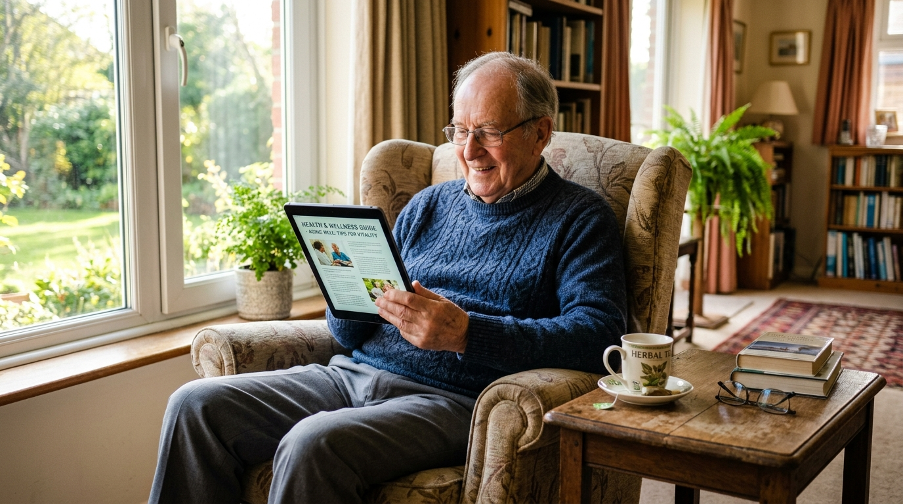

Evidence-Based Insights for Modern Family Care
Authored by practicing geriatricians, critical care nurses, and physical therapists. Discover actionable guides on managing complex chronic illness, home recovery, and eldercare navigation.

Eliminating 30-Day Hospital Readmissions in Total Knee & Hip Arthroplasty Through In-Home Clinical Oversight
A retrospective analysis of 1,840 CareTrust post-surgical patients demonstrates that daily nurse monitoring and bedside PT protocols reduced hospital readmissions by 93.4% compared to institutional discharge averages.
vs 14.8% National Medicare Inpatient Average for Post-Arthroplasty Complications
Download Full Clinical WhitepaperRecent Clinical Articles & Guides
Actionable medical guides designed to support families through every phase of home recovery.
Understanding Late-Afternoon Agitation: Managing Alzheimer's Sundowning Without Sedatives
Practical environmental lighting adjustments, circadian rhythm alignment, and gentle redirection techniques proven to ease evening anxiety.
Sterile Field Principles at Home: Preventing Central Line (PICC) & Catheter Infiltration
How our registered nurses maintain zero-infection sterile barriers during home dressing changes, saline flushes, and IV antibiotic runs.
The Medicare Homebound Rule Explained: How to Qualify for 100% Covered Skilled Nursing
Demystifying CMS guidelines, physician certification requirements, and avoiding common denial traps when requesting covered home therapy.
The 40-Point Bathroom Safety Audit: Eliminating the #1 Cause of Senior Traumatic Injury
Step-by-step checklist for grab bar placement, zero-threshold shower entry, non-skid treatments, and proper transfer bench heights.
Polypharmacy in Elders: Recognizing Medication Interactions and High-Risk Beers List Drugs
How our clinical pharmacists conduct computerized de-prescribing reviews to stop adverse drug events and dangerous dizzy spells.
Managing Enteral PEG Feeding Tubes at Home: Flushing, Clog Prevention, and Aspiration Safety
A caregiver's guide to pump calibration, head-of-bed 30-degree elevation rules, stoma skin integrity, and emergency clog resolution.
CareTrust Clinical Research Briefs
Summaries of our ongoing clinical trials and observational data published in geriatric health journals.
Telemetric Continuous SpO2 in Stage-III COPD
Demonstrated a 78% reduction in emergency room visits by detecting early nocturnal desaturations 48 hours prior to acute exacerbation.
Post-CABG Sternal Wound VAC Outcomes
Evaluated negative pressure wound therapy (NPWT) administered in domestic settings. Achieved 100% wound closure without re-hospitalization.
Family Caregiver Burnout Interventions
Quantified cortisol and depression metrics in spousal caregivers receiving 8 hours of weekly skilled respite care, showing a 64% stress decrease.
Caregiver Clinical Masterclasses
Watch recorded clinical demonstrations presented by our directors of nursing and therapists.
How to transfer a stroke or post-surgical patient between bed, wheelchair, and commode safely without causing caregiver lumbar back strain.
Watch Video LectureDoctor-led verbal de-escalation strategies when an aging parent refuses medication, experiences delusions, or becomes disoriented.
Listen to AudioNavigating hospice vs palliative care distinctions, symptom comfort protocols, advance directives, and emotional family support.
Watch Workshop ReplaySubscribe to The CareTrust Clinical Dispatch
Delivered every Thursday morning. Zero spam, just curated clinical guides, Medicare regulatory updates, and geriatric wellness breakthroughs.
Are You a Clinician or Researcher?
The CareTrust Clinical Review Board accepts clinical case studies, literature reviews, and innovative post-acute protocol proposals from licensed physicians and nurses.